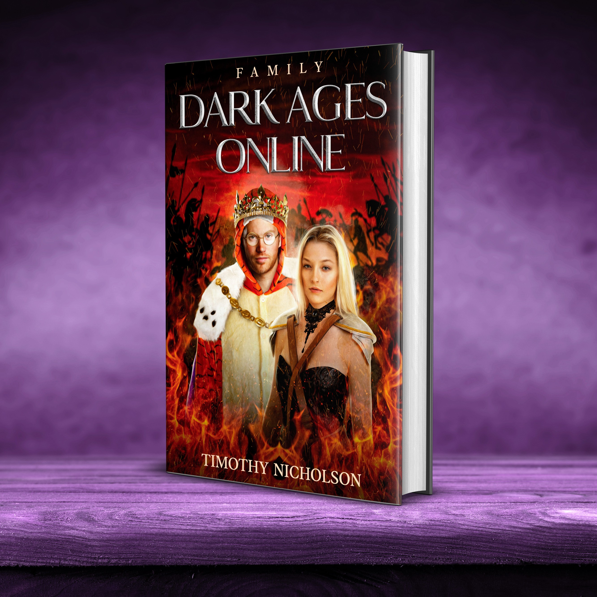

About the author
Tim is an author who blends real life with imagination to create engaging stories. His first LitRPG series, Dark Ages Online, draws on years of gaming and a lifelong interest in adventure and worldbuilding. He grew up in Nebraska, served six years in the Navy, completed his degree after leaving the military, and spent fifteen years working at Microsoft before turning his focus to writing. As a father of four, he often finds inspiration in the stories he shares with his children. He is currently developing the Dark Ages Online trilogy and has plans for a children's book series.
Series
DARK AGES ONLINE
Book 1: FAMILY
|  |
Luke enters the VR game, Dark Ages Online, with his mother and sister. They explore the virtual world, make new friends and explore their abilities. Between dungeon raids and battling bosses, they level their characters and outfit them with epic gear. |